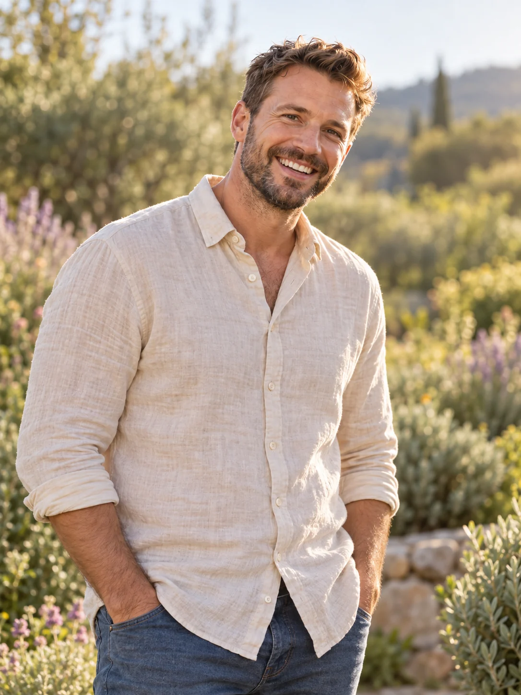
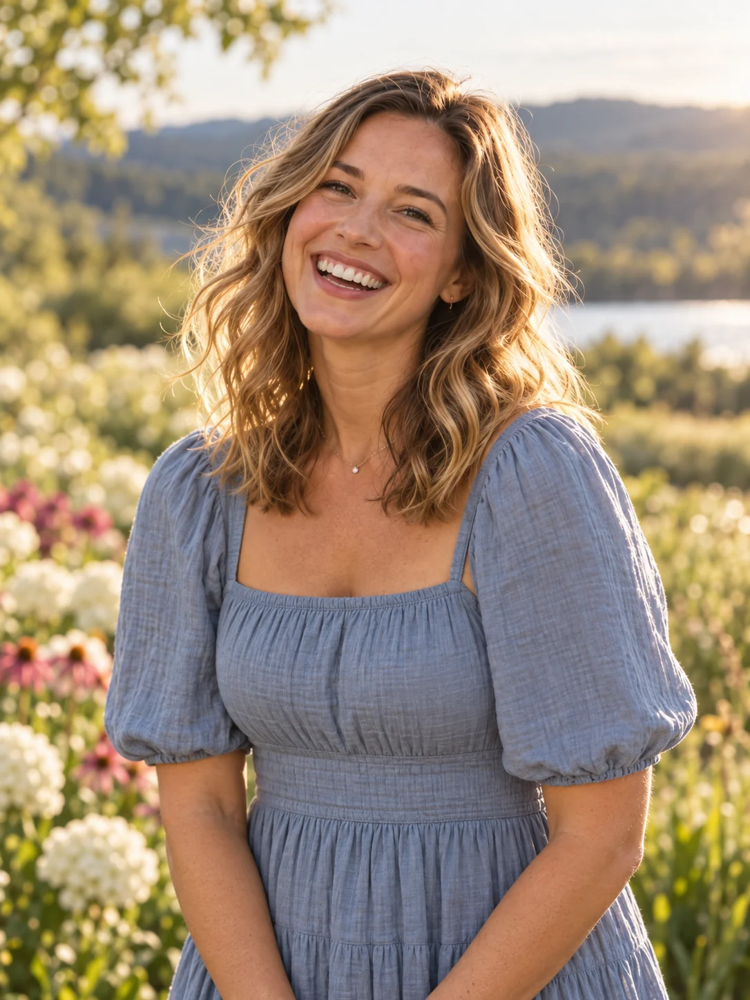
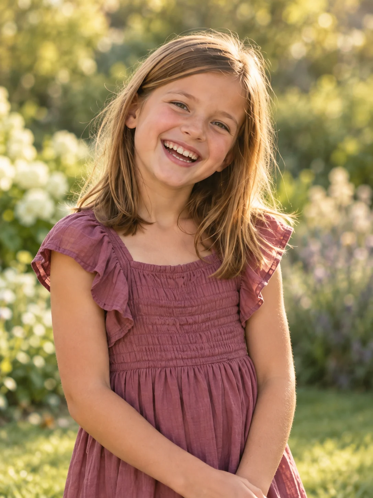
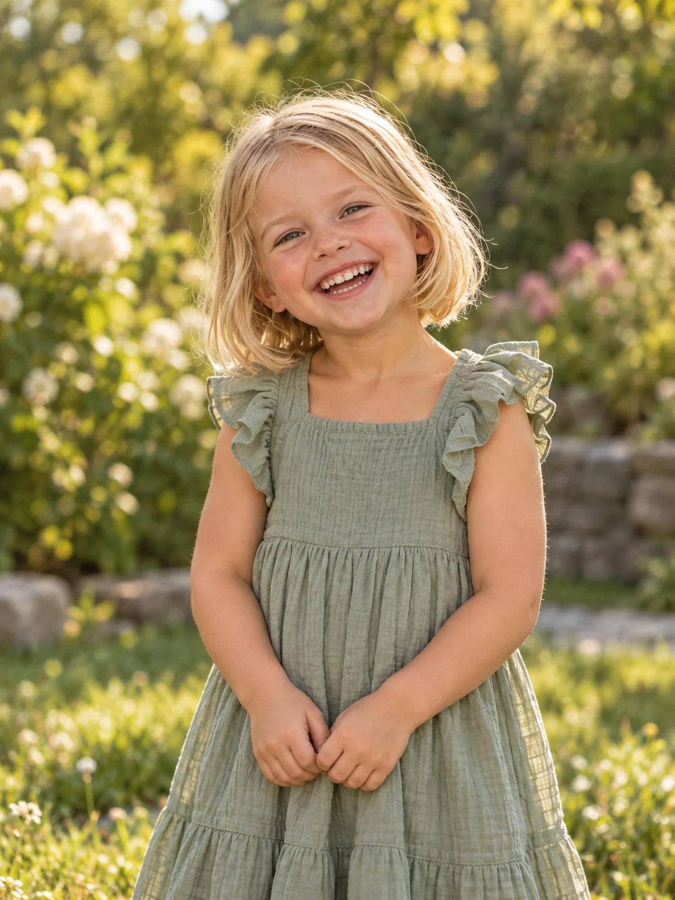
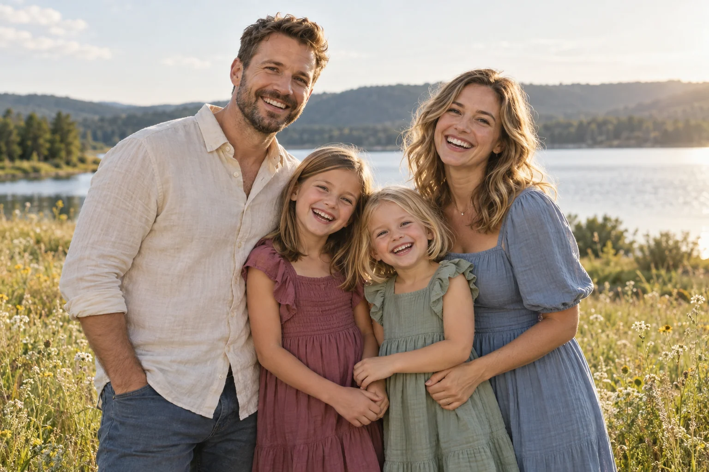
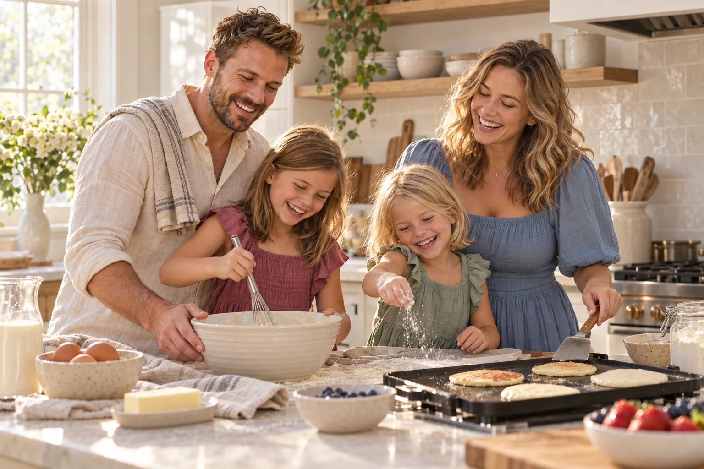

Исследователь
Папа
Александр
Главный по приключениям, вкусному ужину и вопросам «а как это работает?».
✳ Наш маленький уголок интернета
Четыре разных характера. Миллион маленьких радостей. Одна большая история, которую мы пишем вместе.




Счастье — это когда
все свои рядом.


01 / Наше семейство
Знакомьтесь: наша маленькая команда.
У каждого — своя суперсила.
Главный по приключениям, вкусному ужину и вопросам «а как это работает?».
Сердце дома. Помнит важное, обнимает крепко и превращает обычный день в уютный.
Режиссёр домашних спектаклей, любительница новых открытий и мамина помощница.
Вечный двигатель, искреннее «почему?» и улыбка, от которой становится светлее.
Все герои вымышлены. Фотографии созданы ИИ для демонстрации сайта.
02 / Счастье в деталях
Те самые кадры, в которых хочется
остаться чуть подольше.
«Надо почаще делать вот так».
Каждый раз говорим — и каждый раз возвращаемся.
03 / Маленькая большая история
Без точных дат и громких слов.
Просто главы, из которых
складывается целая жизнь.
Один разговор, общая шутка и ощущение, что вы давно знакомы. Случайная встреча становится совсем не случайной.
Близкие рядом, ладонь в ладони и начало общей истории. Дом становится местом, где всегда ждут.
Первые шаги, первые «почему?» и первые общие приключения. В доме всё больше смеха, а в сердце — места для него.
Завтраки, прогулки, планы и мечты. Мы не пытаемся успеть всё — мы учимся быть рядом.
Новые места, новые воспоминания и ещё миллион поводов обнять друг друга.
04 / То, что нас объединяет
Не идеальная семья.
Своя, настоящая, любимая.
Без повода и условий. Замечать друг друга даже в самых обычных днях.
Падаем — поднимаем. Побеждаем — празднуем всей командой.
Воскресные завтраки, кино под пледом и маленькие праздники просто так.
Над своими шутками, танцами на кухне и неожиданным результатом рецепта.
С любым вопросом можно прийти домой. Мы всегда на одной стороне.
Дом — не адрес. Это ощущение, которое появляется, когда мы вместе.
05 / Наш фотоальбом
12 сгенерированных кадров.
Нажмите на фото, чтобы рассмотреть его.
Когда дома ждут.
Когда за столом тесно.
Когда в сердце тепло.
Пусть таких моментов будет больше.